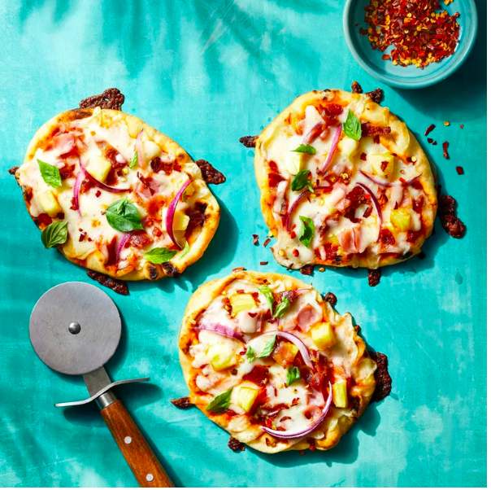

Hawaiian Pizza

Descriptions
Pineapples on pizza is man's best inventions since the Wrighty brothers came up with the airplane in '06. This seemingly unorthodox
mashup of macon and pineapples yields a unique flavor that is undoubtedly one of the world's favourites
The macon consists of fried strips of bacon, either rectangular or circular. It's good, easy to cook and rewarding
Ingredients
- ½ cup pizza sauce
- 4 small naan breads
- 1 ½ cups shredded mozzarella cheese
- ⅓ cup pineapple tidbits, well drained
- 2 slices deli ham, cut into bite-sized pieces
- 2 slices cooked bacon, crumbled
- 1 thin slice red onion, peeled and cut into chunks
Steps
- Preheat the oven to 400 degrees F (200 degrees C). Line a baking sheet with foil.
- Spread pizza sauce on naan breads and sprinkle with mozzarella cheese.
Top with pineapple tidbits, ham, bacon, and red onion. Place on the prepared baking sheet.
- Bake in the preheated oven until crust is golden brown and cheese has melted, about 10 minutes.